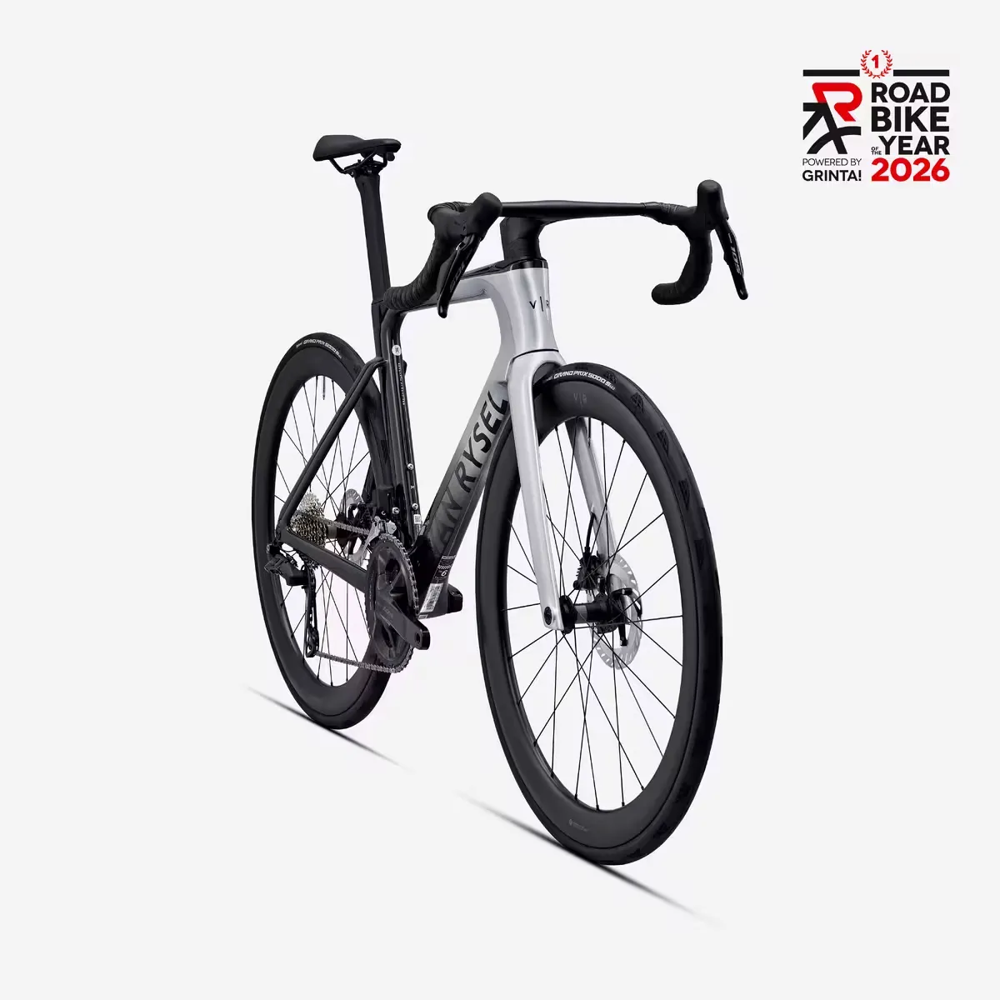
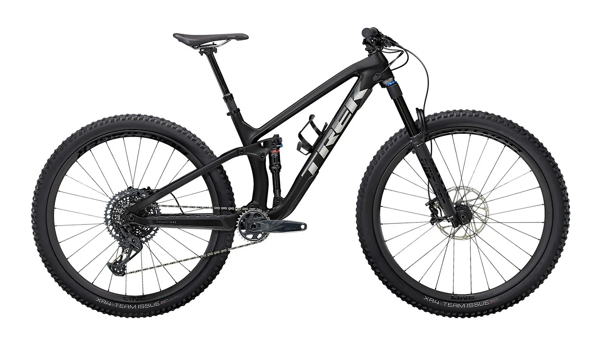

Üdvözlünk újra,
Kiss Anna • Garázsom
Hobbista • Tag 2026 Máj. óta
A bicajaim

Van Rysel
Van Rysel RCR
Országút · M / 54 váz

Trek
Trek Fuel EX
MTB · L váz

Specialized
Specialized Diverge STR
Gravel · 54 váz
Rendeléseim
#BR-2026-0428
2026. március 18. · 2 termék
#BR-2026-0512
2026. április 7. · 1 termék
#BR-2026-0589
2026. május 2. · 3 termék
Edzésnapló
Vidd fel az adatokat egy túra után – az átlagsebességet automatikusan kiszámoljuk neked.
Még nincs rögzített túrád
Vidd fel az első tekerésed adatait fent!
| Dátum | Táv | Idő | Átlagsebesség | Művelet |
|---|
Statisztika · ez a hónap
Havi teljesítmény (utolsó 6 hónap)
Csúcsadatok
Gyakran ismételt kérdések
Gyors szerelési útmutató
A garázsodban lévő bicikleidhez összegyűjtöttük a leggyakoribb otthon elvégezhető műveleteket.
Szükséges eszközök: láncolaj, tisztítórongy, lánctisztító (opcionális).
- Tedd a hátsó kereket állványra vagy fordítsd fejre a bicajt.
- A pedállal forgasd visszafelé a hajtóművet, közben töröld le a láncot.
- Lánctisztítóval menj át rajta, majd hagyd megszáradni.
- Csepegtess olajat minden egyes láncszemre a görgő tetejére.
- Hajtsd át pár fordulatig, majd töröld le a felesleget.
Szükséges eszközök: gumibélelő, pót gumibelső vagy folt, pumpa.
- Vedd ki a kereket a gyorszárral vagy thru-axle-lel.
- Engedj ki minden levegőt a szelep megnyomásával.
- Két gumibélelővel pattintsd le a köpenyt a felni egyik oldaláról.
- Húzd ki a gumibelsőt, ellenőrizd a köpenyt belülről!
- Helyezd be az új belsőt, kicsit fújd fel, majd pattintsd vissza a köpenyt.
- Fújd fel az ajánlott nyomásra, és szerd vissza a kereket.
Tünetek: ugrál a lánc, recseg váltás közben, nem kapcsol fel a legnagyobb fogasra.
- Kapcsolj le a legkisebb hátsó fogasra.
- Lazítsd ki a bowden szorítócsavarját és vegyél ki minden húzást.
- Állítsd be a H (High) limitcsavart: a vezetőgörgő a legkisebb fogas alá kerüljön.
- Húzd vissza a bowdent kézzel, szorítsd meg újra.
- Apró negyed fordulatokkal állítsd a barrel adjuster csavart.
- Végül a L (Low) limittel állítsd be a legnagyobb fogas pozícióját.
Szükséges eszközök: bleed kit, DOT vagy mineral olaj, nitril kesztyű.
- Tisztítsd le a fékkengyelt és a kart, vedd le a betéteket.
- Helyezd be a bleed block-ot a betétek helyére.
- Csatlakoztasd a bleed fecskendőket a kengyel és a kar portjához.
- Pumpáld át az olajat lentről felfelé, amíg a légbuborékok kijönnek.
- Zárd le: előbb a kengyel port, majd a karét.
- Tedd vissza a betéteket, próbáld le a féket.
Hüvelykujjszabály: belső szár (cm) × 0.883 = nyeregfelszín – középrész távolság.
- Állj a falhoz és tegyél egy könyvet a lábad közé – a könyv pereme adja a belső szárat.
- Szorozd be 0.883-mal a belső szárad cm-ben.
- Mérd meg a nyereg felső felületétől a középrész tengelyéig.
- Ülve a nyergen, garokkal a pedálnak a lábad legyen majdnem teljesen kinyújtva.
- Finomhangolj ±5 mm-t kényelem és teljesítmény szerint.